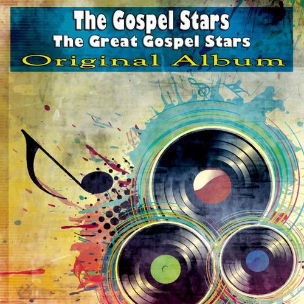

The Gospel Stars
The Gospel Stars was a gospel music group that recorded and released the first Motown album in the label's history. They had been active in Washington D.C. since the 1940s and joined Tamla in Detroit in 1960.
Complete Discography & Tracklists (5)